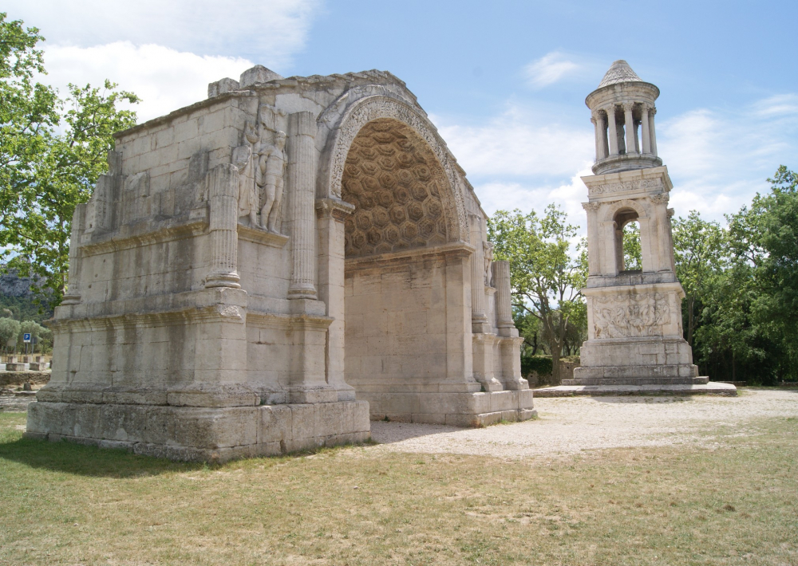

arrow_backPoses seuls sur un parvis desert face aux Alpilles, le Mausolee des Jules et l'Arc de triomphe sont parmi les monuments romains les mieux conserves au monde. Ils marquaient l'entree nord de l'antique Glanum.
Eleves il y a plus de 2000 ans, ces deux monuments ont survecu aux invasions barbares, au Moyen Age, aux guerres de Religion — debout, intacts, accessibles librement. Un miracle de preservation.